いらっしゃいませ。
生まれる国も、家庭も、生まれるまで分かりません。公的な統計データでつくった一生ぶんのお金の流れを、約10分で体験するゲームです。
ゲームの中で各国400人の人生を動かしたときの、本人が生涯で稼いだお金の中央値です。現地通貨を今の為替で円に直しています。物価が違うので、暮らしの豊かさをそのまま比べたものではありません。
無料・登録なし・スマホでそのまま遊べます
生まれて、選んで、お会計。
1回およそ10分。画面を見ているだけで一年ずつ進み、ときどき分かれ道が来ます。
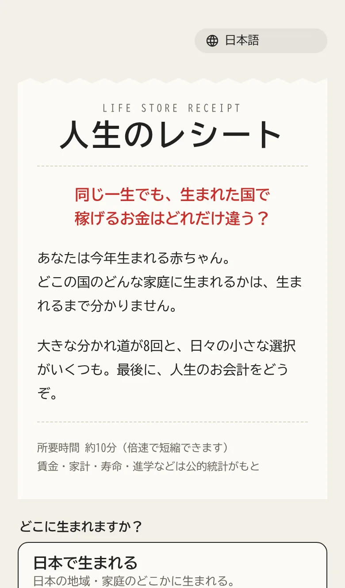
生まれる場所を選ぶ
「日本」「主要20か国」「世界」から選びます。
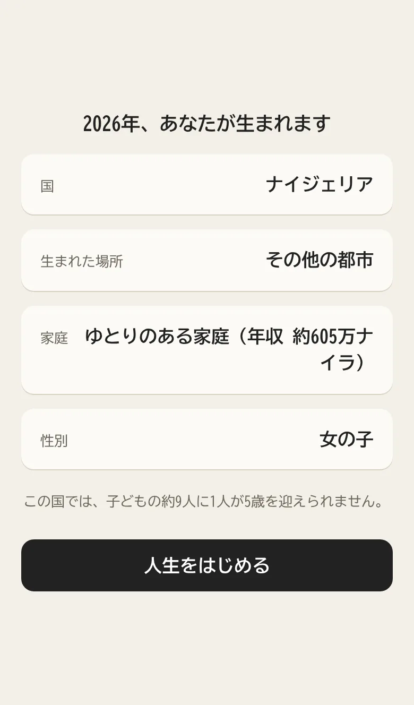
生まれる
国・都市か農村か・家庭の収入・性別が、実際の割合で決まります。
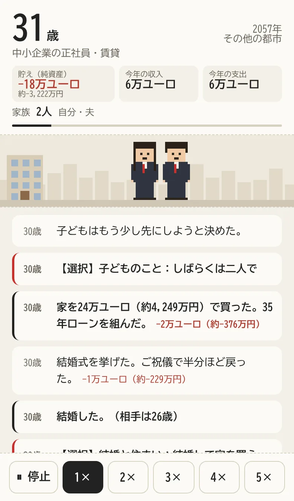
一年ずつ生きる
収入と支出、家族、その年の出来事。ドット絵の自分も年をとっていきます。
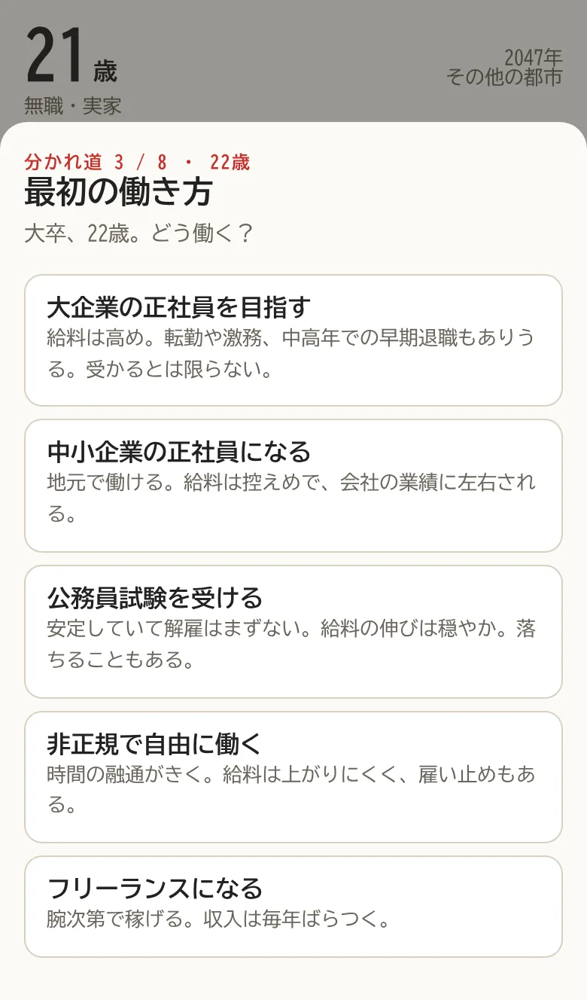
分かれ道で選ぶ
進学、働き方、結婚、住まい、介護など。正解はありません。
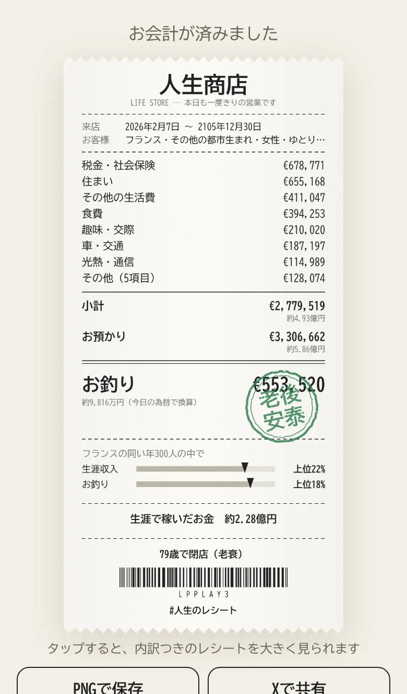
人生のお会計
一生で何にいくら使ったかが、1枚のレシートになります。
0歳から、最後の日まで。
ゲームの中の、ある日本の女の子の一生です。七五三、入学、結婚、子育て、入院。出来事に合わせて、ドット絵の暮らしも変わっていきます。
名古屋圏
同じ人生は、ひとつもない。
着物の七五三も、海外への出稼ぎも、災害も。国や出来事によって、ドット絵の場面が変わります。
同じ2026年に生まれた、3人の明細。
日本、アメリカ、エチオピア。生まれた場所が違うだけで、レシートの桁が変わります。
ゲームの中で生まれた人生の例です。押すと、年ごとのお金の流れまで見られます。
こんな人生が、ありました。
ゲームの中で生まれた人生から、いくつかを選びました。
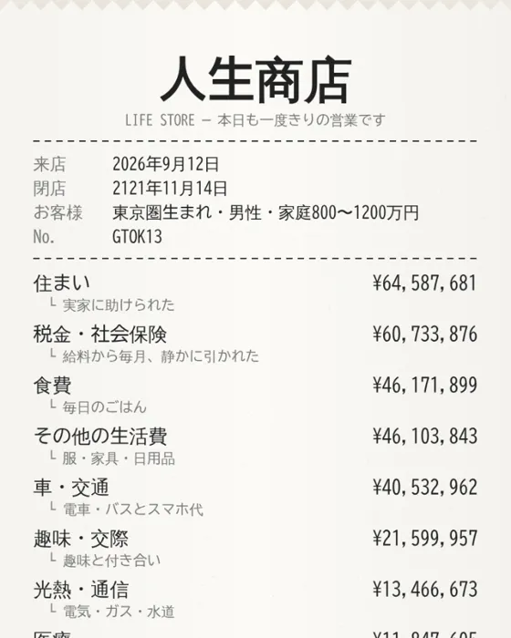
東京で、大企業に勤めて老後安泰生涯で稼いだお金は約1.96億円。最後に約1.33億円が残った。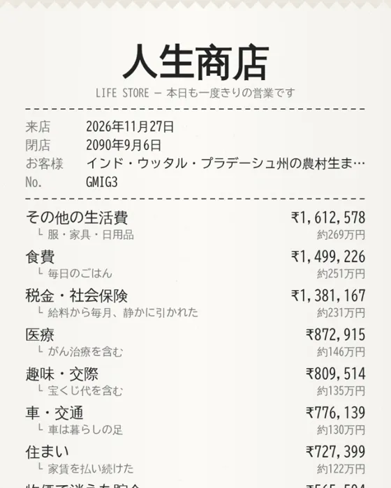
インドの農村から、海外へ出稼ぎに出稼ぎで家計を支えた。生涯で稼いだお金は約1,732万円。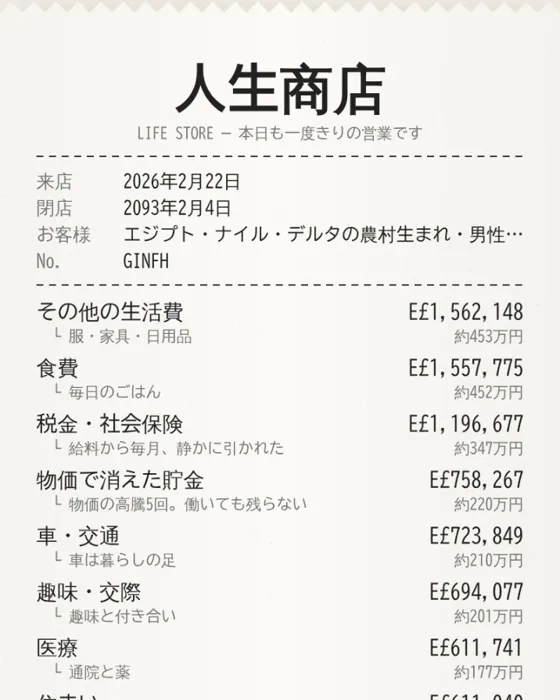
物価の高騰に、何度も貯金を削られた物価で消えた貯金は約220万円。実際に起きた上昇率のとおりに。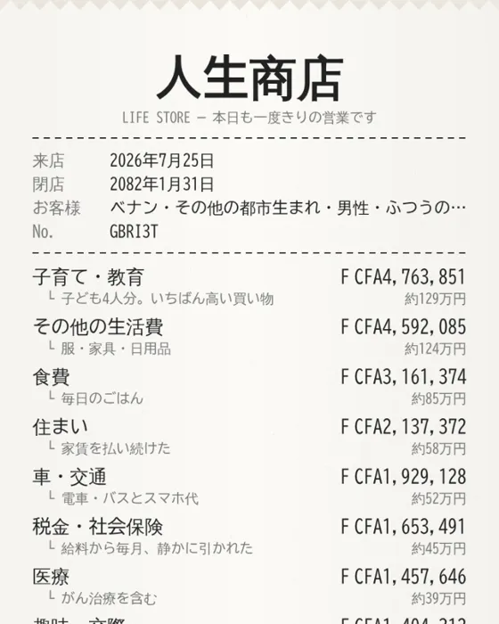
婚資を払って結婚し、子だくさんに子ども4人。恋愛・結婚にかかったお金は約17万円。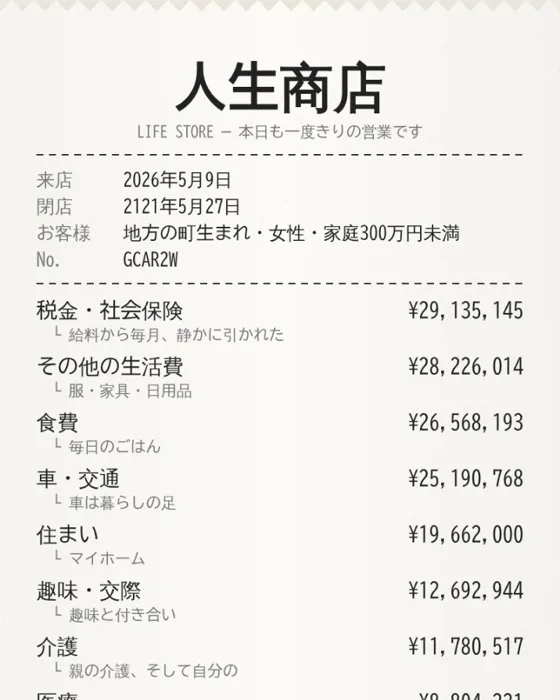
実家に残り、親の介護を引き受けた介護にかかったお金は約1,178万円。最後に約1,218万円が残った。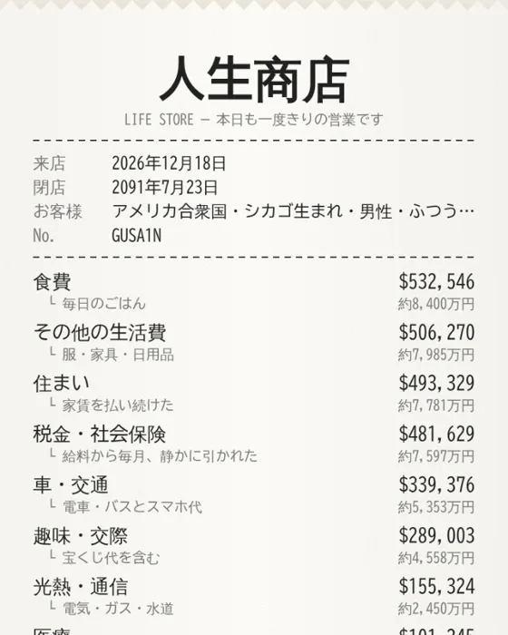
アメリカで高い給料、それでも残らない生涯で稼いだお金は約3.90億円。それでも最後は約309万円。授業でも、そのまま使えます。
1回の体験は約10分。一人ひとりが自分の人生を体験し、結果を持ち寄って話し合えます。
使い方の例
- 社会・地理国の違い
- 同じクラスでも生まれた国がばらばら。収入や物価、税と社会保障の違いを、自分の体験から考えます。
- 家庭科・金融教育一生のお金
- 住まい・子育て・老後のお金を、一生の流れの中で見ます。何にいくら使ったかをレシートで振り返れます。
- 話し合いのきっかけにURLで共有
- 結果のURLを共有して、同じ国でも分かれ道の選び方でどう変わるかを比べます。
データと配慮
- もとにした統計公的データ
- 日本は政府統計（賃金・家計・寿命・進学など）。世界の88か国は、世界銀行・ILO・国連・IMF・OECD・各国の税務当局などの公的データです。
- 金額について試算
- 統計をもとにした架空の試算です。実在の人物の人生ではありません。
- 扱わない内容配慮
- 自殺や虐待など、過度に苦痛な出来事は扱いません。20歳になる前に亡くなることもありません。
よくある質問
無料ですか？ 登録は必要ですか？
無料です。登録やログインも必要ありません。ブラウザで開くだけで遊べます。
どのくらい時間がかかりますか？
1回およそ10分です。画面下のボタンで最大5倍速まで速められます。
スマホとパソコン、どちらで遊べますか？
どちらでも遊べます。スマホの縦画面に合わせて作っています。
同じ国に、もう一度生まれることはできますか？
「日本で生まれる」を選べば必ず日本に生まれます。「主要20か国」「世界」では、どの国になるかは毎回の運しだいです。
結果の金額は正確ですか？
公的な統計をもとにしていますが、一人ひとりの人生を正確に予測するものではありません。国による違いや、選択による違いを感じるための試算です。
遊んでみた感想を、聞かせてください。
よかったところ、分かりにくかったところ、直してほしいところ。ひとことでも、これからの改善に使わせていただきます。
いただいた内容は、すべて読んで改善の参考にします。
お待ち
してます
どこに、生まれますか？
またのご来店を、お待ちしております。
#人生のレシート
金額は公的統計をもとにした架空の試算です。